WORLD OF WARCRAFT
LUI
GUIDE
Find what you can adjust and where to find it. Available options depend on your client, class and enabled modules. Start with the parts you use. Screenshots may differ slightly by client and installed addons. Select an image to open it at original size.
General → Welcome
Type /lui or click the gear icon in the LUI Micromenu. Select a module on the left to open its settings.
General → Welcome keeps the LUI Guide, Discord and Changelog links in one place. Click a link field and press Ctrl+C to copy it. New setups also receive a one-time welcome message with help links.
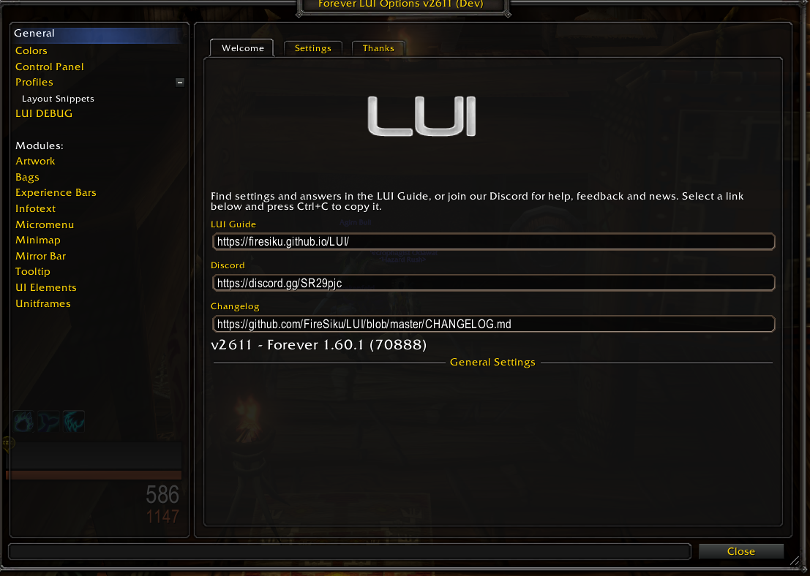
Optional action-bar and raid-frame layouts are under Control Panel → Addon Setup.
General → Settings
General → Settings contains Blizzard window scaling, error-message and talent-message filters, module notices and keyword-based automatic invites.
Under Damage Text, choose combat-text fonts. Outline affects scrolling text only. Changing the font for damage numbers above units requires logging out to character selection and back in.
Under Profile Backup, Create Backup saves the active profile. Restore Current Settings restores compatible values over current defaults; Revert Exact Backup restores the saved values directly.
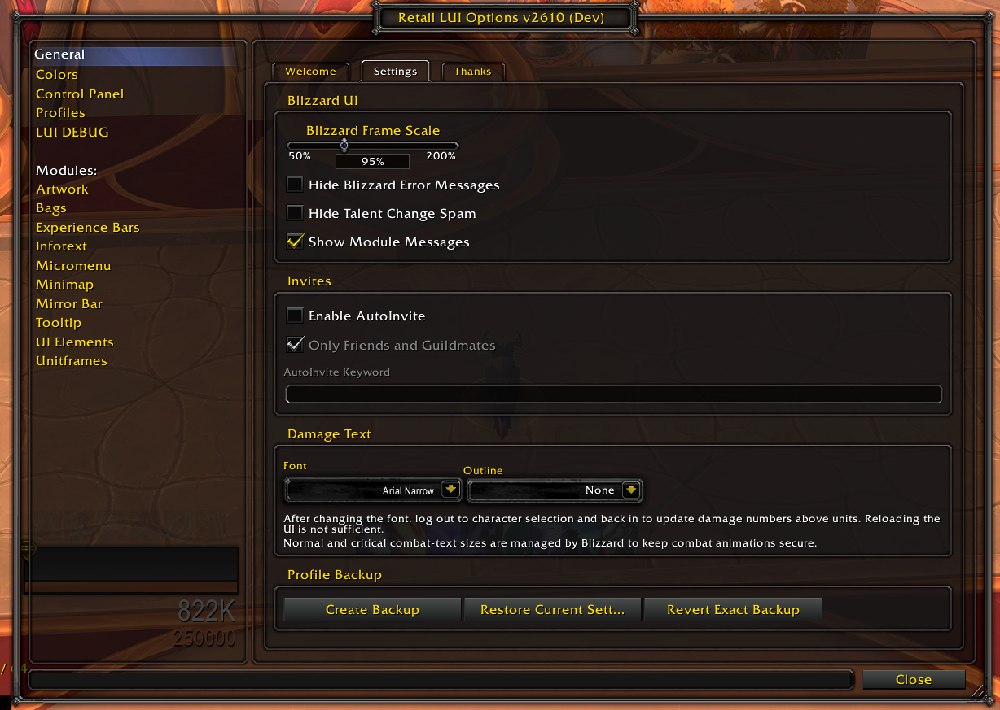
Colors
Colors contains shared LUI palettes. Unitframes → Colors contains the unitframe palettes. An element's color mode determines which palette or individual color it uses.
Use Classes for class and resource colors, Factions for faction and reputation colors, and Miscellaneous for gradients and level-difference colors. Available class entries depend on your client.
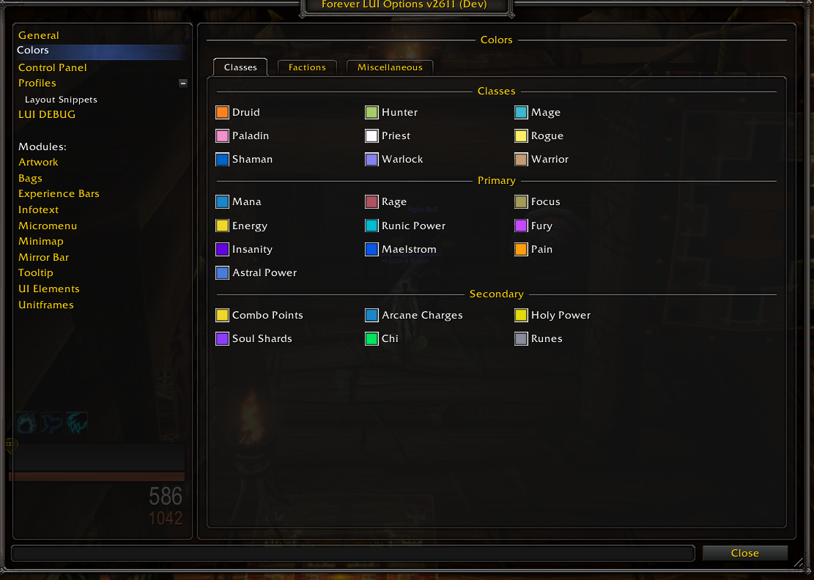
Open the panel's own settings, choose Color Type → Individual and select its color there. Changing the shared class palette can also recolor other elements using that palette.
Artwork → Themes applies a coordinated set of colors across its supported elements. Applying a theme can replace several individual color choices at once. Use the individual element's settings for a single adjustment.
Control Panel
Control Panel → Modules switches individual parts of LUI on or off. Each button shows Enabled or Disabled; follow the reload prompt after changing it. Settings for disabled modules may be hidden. Always Enabled marks a component without an on/off switch.
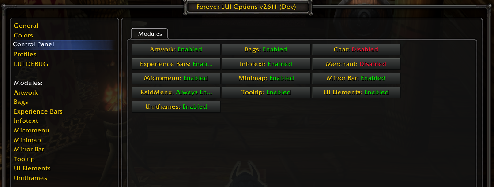
A normal click switches a module on or off. Shift-click resets that module's current settings to defaults.
Optional addon setup
Control Panel → Addon Setup offers starting layouts for supported external addons. Install and enable the addon, finish its initial setup and save its current profile or skin before using the LUI button. Apply the layout outside combat.
The first setup creates and selects a separate copy named LUI - <original>. If that name is taken, LUI chooses a free name. Reapplying from the original or its LUI copy updates the same LUI copy. To return to your previous layout, select the original profile in the external addon.
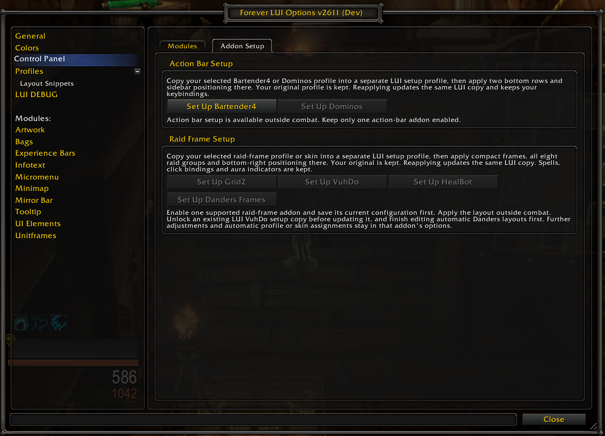
Bartender4 or Dominos
Enable one of these action-bar addons, then click Set Up Bartender4 or Set Up Dominos. The LUI copy receives two bottom rows of twelve buttons and sidebar assignments. Keybindings are kept.
Enable the sidebars under Artwork if needed. Fine-tune the bars in Bartender4 or Dominos. If both addons are enabled, the setup buttons are unavailable.
Grid2, VuhDo, HealBot or Danders Frames
Enable one supported raid-frame addon and click its setup button. The LUI copy receives compact raid frames, all eight groups and bottom-right positioning. Spells, click bindings, aura indicators and other panels are retained. The UI reloads after applying.
Finish any automatic-layout editing first. In VuhDo, save the current configuration before starting; an existing LUI setup copy must be locally writable before updating it. Enable only one raid-frame addon for setup; Plexus also blocks a parallel setup.
Further layout adjustments and automatic profile or skin assignments stay in the external addon's options. The raid artwork is configured under Artwork → LUI Panels → Raid Panel.
Profiles
Profiles selects the active LUI profile. Characters using the same profile share its settings. To experiment independently, create a separate profile first.
Create a test profile from your own layout
- Check Current Profile and remember your normal profile's name.
- Enter a different name, such as
Snippet-Test, under New and press Enter. - Check that Current Profile now shows the new name.
- Under Copy From, select your normal profile. This copies its settings into the newly selected test profile.
The selected entry is the source; Current Profile is the destination. Selecting Default while your normal profile is active replaces that normal profile's settings with Default. Create and select the destination first.
Export the active profile
Use Profiles → Profile Import / Export to share a complete setup or copy it between Retail and Forever. Update LUI in both clients first.
- Open
/lui→ Profiles and check Current Profile. - Scroll to Profile Import / Export and click Generate Export String.
- Click inside Export String. Press Ctrl+A, then Ctrl+C to copy it completely.
Import a complete profile
Scroll below Export String to find the Import section.
- Enter a new Profile Name under Import and press Enter. A new name preserves your existing profile.
- Paste the complete string into Import String and click Accept below the text box.
- Outside combat, click Import Profile. LUI selects the imported profile and reloads.
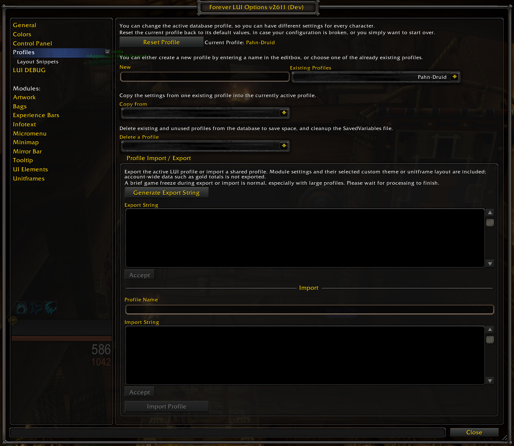
Copy From lists profiles in the current client. Use export/import between clients. The imported copy is independent; later changes are not synchronized.
Exporting or importing a large profile or snippet can briefly freeze the game while LUI processes the settings. Wait for it to finish.
Share selected settings with Layout Snippets
Profiles → Layout Snippets shares selected LUI sections, such as Artwork or Unitframes, rather than a complete profile. The tabs are Share, Import and Restore.
- On Share, enter a name and press Enter. Select the LUI sections to include.
- Click Generate Snippet and copy the complete string.
- Share it as a text attachment or preset post. Include a screenshot, your client, LUI version, resolution/UI scale, included sections and any external addons used in the example.
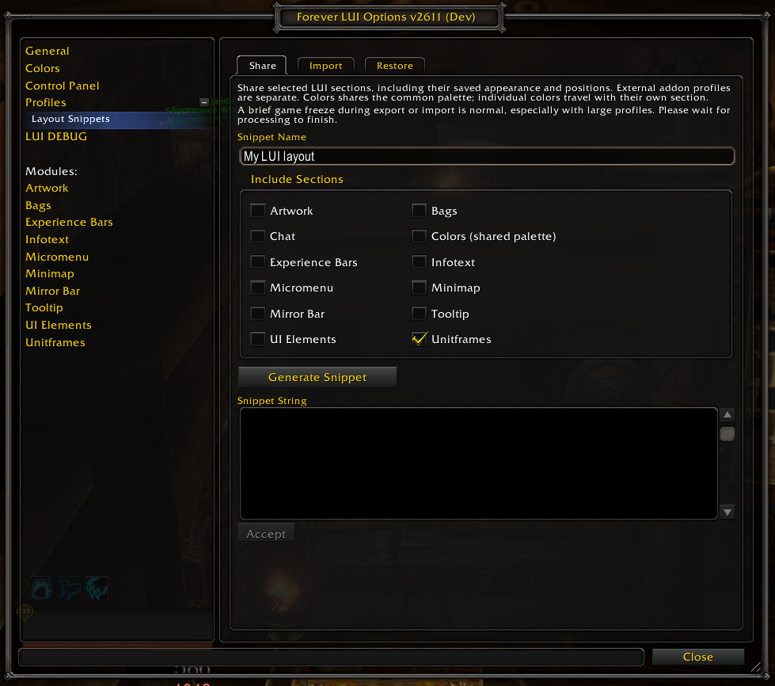
Import a snippet into the current profile
- Select the LUI profile you want to change. Use a separate test profile first if you want to compare layouts.
- On Import, paste the complete string into Snippet String.
- Click Accept below the text box, then Read Snippet.
- Review the source information and select which included sections to apply.
- Click Apply to Current Profile, check the confirmation and accept it. LUI reloads outside combat.
Read Snippet reads the last confirmed text. Confirm a new paste with Accept first, or the previous value can be read and the unconfirmed paste can be cleared.
Undo the last snippet import
In the same profile, open Restore → Undo Last Snippet Import. This restores the affected sections to their state before that import and reloads the UI. There is one shared backup slot: a later snippet import replaces it, and a successful restore uses it up.
Unselected LUI sections and module on/off switches are kept. Each selected section includes its saved layout and settings; individual frames, only positions or only fonts cannot be selected separately. Sharing Colors can also change other elements that use the shared palette.
Bartender4, Dominos, Details and other external addon profiles are shared through their own addons. They are not included in a LUI profile string or snippet. Use Profile Import / Export for full-profile strings and Layout Snippets for snippet strings.
LUI DEBUG
Enable the bundled LUIDiagnostics addon, then open LUI DEBUG → Open LUI DEBUG or type /luidebug. Follow the instructions in the window.
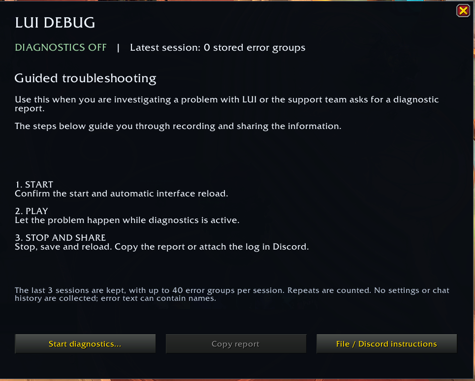
Recording continues through reloads and logins until you stop it in LUI DEBUG.
Keep END OF REPORT when copying. Nothing is uploaded automatically. General Lua errors also require !BugGrabber; blocked-action events can be recorded without it.
Artwork and Sidebars
Artwork → Themes selects, saves and shares artwork themes. Use Profiles to share the complete LUI setup.
Panels and orb
Artwork → LUI Panels controls navigation artwork, the orb, chat and raid backgrounds, meter panels and sidebars. Each panel offers appearance and positioning settings; Bar Preset / Anchor assigns an existing frame.
Under Artwork → LUI Panels → Navigation, Show Orb controls the orb. The same page contains the navigation buttons and bottom-line artwork. The orb toggles assigned panels together.
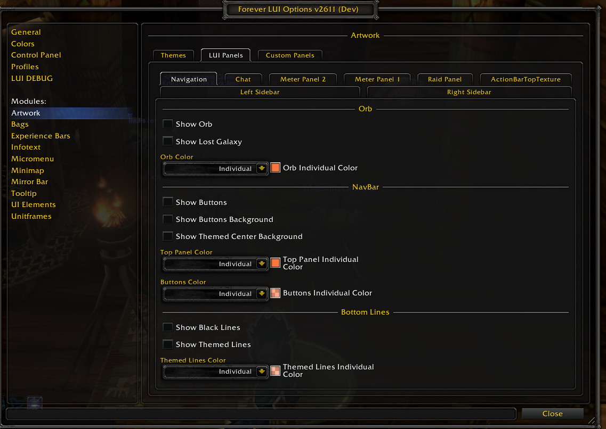
An unassigned meter panel has nothing to toggle. Artwork → LUI Panels → Raid Panel controls the background and its frame attachment. Configure LUI raid frames under Unitframes → raid, Blizzard frames in their own settings, or external frames in their addon.
For supported external frames, Match Frame Size lets the artwork follow the attached window's size. For Blizzard raid frames, the orb and panel button toggle the artwork background while Blizzard controls the raid frames' normal visibility.
Create both windows and choose damage or healing in Details! first. Under Artwork → LUI Panels, assign Meter Panel 1 → Bar Preset → Details - Window 1, then Meter Panel 2 → Details - Window 2. Move the windows in Details!; their LUI artwork follows.
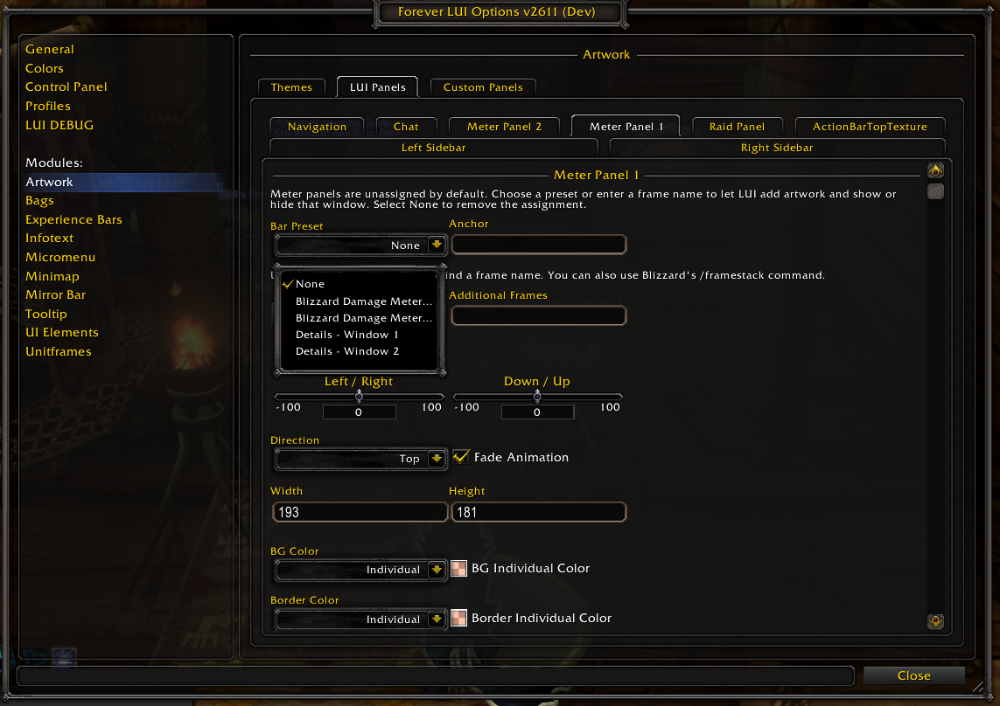
The crescent above the action bars
Open Artwork → LUI Panels → ActionBarTopTexture. Enabled shows or hides this artwork. Adjust Width, Height, Scale and the position controls to fit your bars.
Sidebars
Open Artwork → LUI Panels → Left Sidebar / Right Sidebar. Turn on Enabled, then select your installed action bar under Bar Preset or enter its frame name under Anchor.
Auto-Adjust Position and Auto-Position support Bartender4 and Dominos. Changing Bar Preset turns Auto-Position off; enable it again after choosing the desired bar if you want LUI to keep positioning it. For a complete starting layout, use Action Bar Setup.
Custom panels
Artwork → Custom Panels creates extra background artwork for an existing window, such as a quest tracker or another addon's display. Create and configure the actual window in its own settings first.
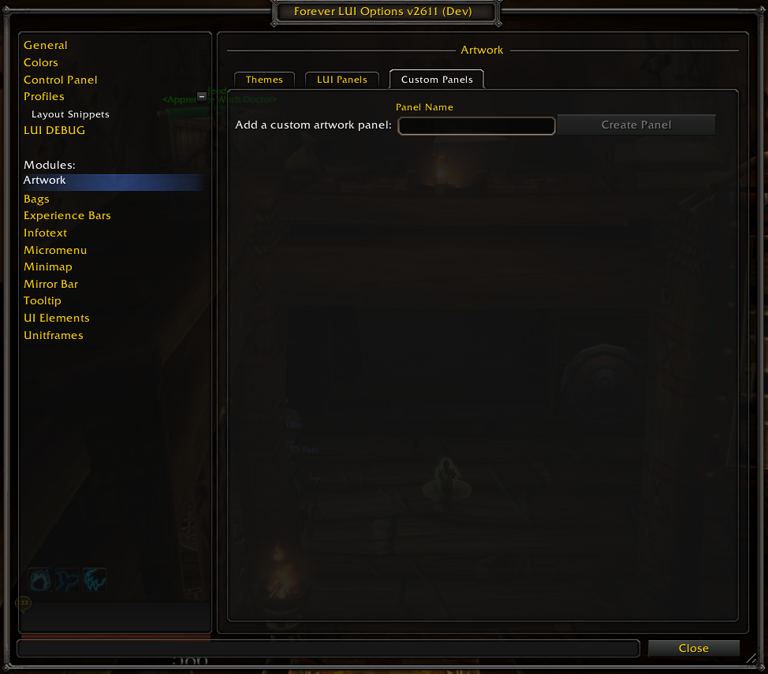
- Enter a unique Panel Name, for example
Tracker Background, press Enter, then click Create Panel. - Select the new panel and leave Enabled on.
- For a simple background, choose Category → LUI Texture and select Solid Panel in the texture list.
- Set Width, Height and Scale. Choose Individual in the panel's color settings for a separate color; Alpha sets its transparency.
- Enable Anchored and enter the existing window's frame name under Parent, then confirm the input. The panel follows that frame's movement and visibility.
- In Position, the first Anchor chooses a point on the panel and the second chooses a point on its parent. Choosing Top Right for both attaches those corners together. Use Left / Right and Down / Up for the offset.
Open Artwork → LUI Panels → Meter Panel 1 → LUI Frame Identifier, then move the mouse over the window. Look for the main window's name, rather than a temporary row, icon or button. Blizzard's /framestack command can also help identify it.
Enter the name exactly, including capital letters. For example, a native quest tracker may use ObjectiveTrackerFrame; use the name present in your client. If it is unavailable, LUI uses the screen as a fallback. Change Width and Height again if you resize the window and want a different background size.
Choose Custom LUI Texture for a filename in LUI's texture folder, or Custom Texture Path for a complete WoW texture path. Horizontal/Vertical Flip and custom texture coordinates adjust the image.
Bags and Bank
Bags → Backpack Options controls items per row, spacing and scale. Disable Lock Frame to move the window. Newline After Bags starts a separate row for each bag.
Fill Bags from Bottom changes the fill direction and immediately runs cleanup. Bag filters and reagent restrictions still apply.
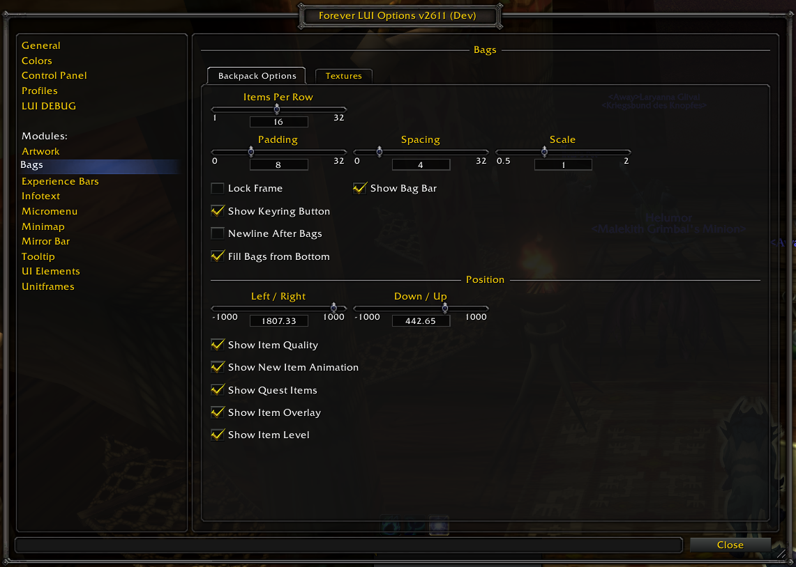
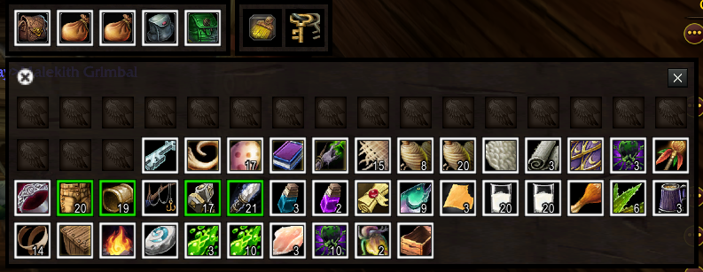
Textures, borders and colors
Bags → Textures contains fonts, backgrounds and separate window/item borders. Show Item Quality colors item borders by quality. Background opacity and item-slot backgrounds can be adjusted separately.
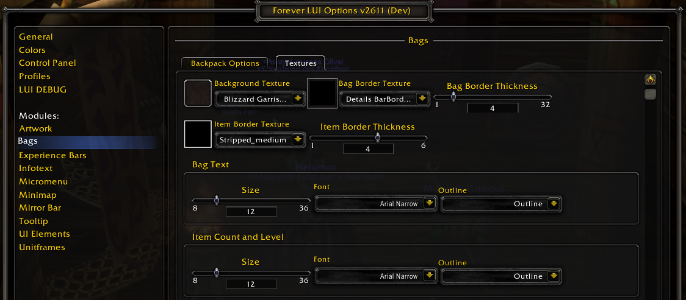
Background Color fills the window when Background Texture is None. With a texture selected, its opacity is used while the texture keeps its own colors.
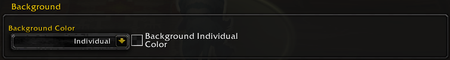
Bag Border, Item Border and Item Background have separate colors. Item Background colors the backplate beneath the icon.
Item Border Color is greyed out while Show Item Quality is enabled under Backpack Options. Turn off Show Item Quality to choose one border color instead.
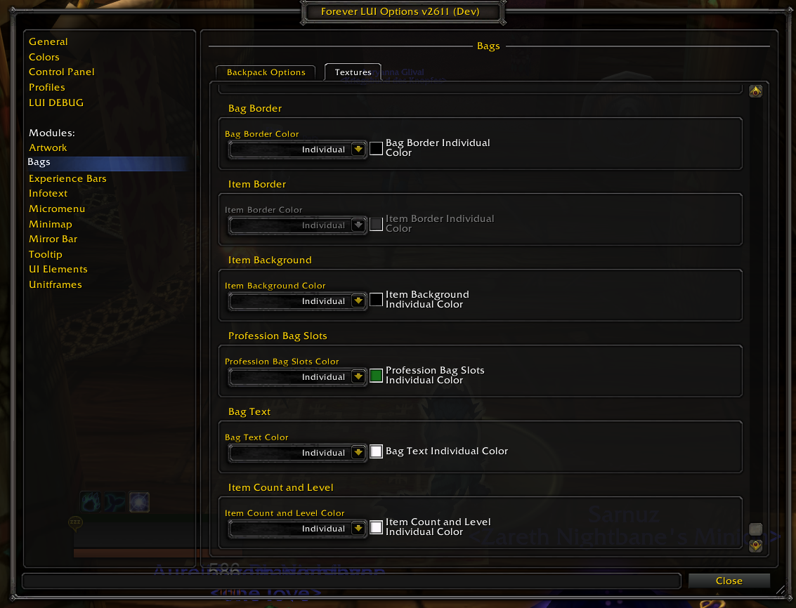
Retail's Bags → Bank Options → Use LUI Bank is optional and off by default. It shares bag textures, with separate layout settings. Forever uses its native bank; its keyring shortcut also requires Blizzard's keyring visibility setting.
Chat
LUI leaves chat to Prat or Chatter while either addon is enabled, so its own Chat settings may be absent. To use LUI Chat, disable the other chat addon, reload, and enable Chat under Control Panel if needed.
Chat → General Settings controls fonts, message and tab fading, channel names and link tooltips. Disable message fading keeps chat messages visible.
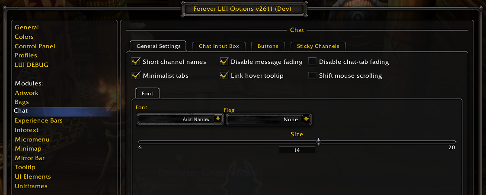
Chat → Chat Input Box controls the typing box: font, Anchor Point, height, history and background.
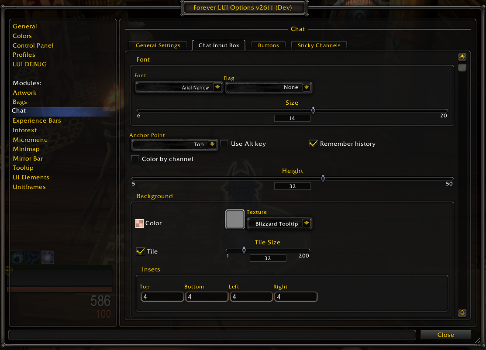
Further down on Chat Input Box, Border sets the input box's border texture and thickness.
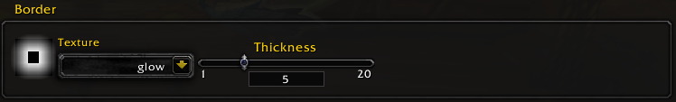
Buttons controls chat buttons and copying; Sticky Channels keeps chosen channels selected after sending a message.
Set it under Chat → General Settings → Font → Size. The chat tab's right-click menu changes Blizzard's display size; LUI reapplies its own configured font size when it refreshes or reloads.
Experience Bars
Experience Bars tracks available progress such as experience, reputation and honor. Set the bar size, position, textures, labels and values here. Text and hover tooltips have separate switches.
Enable Allow tracking two things at once. Enable Separate tracked bars for an independent position and width, then turn off Lock Bars to move them.
Automatically track reputation gains switches the watched faction when reputation is gained.
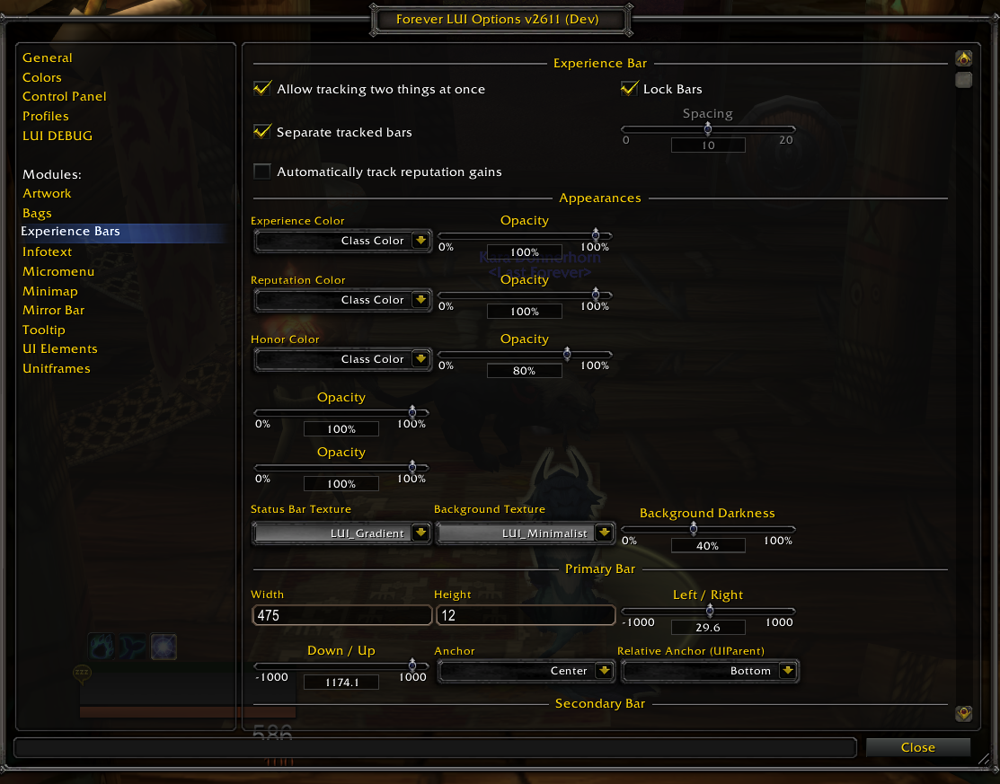
Primary Bar and Secondary Bar control position and size. Further down, Text Settings and Font control labels and values.
Show Rested XP adds the reserve to the text; its tooltip and blue rested area remain independent.
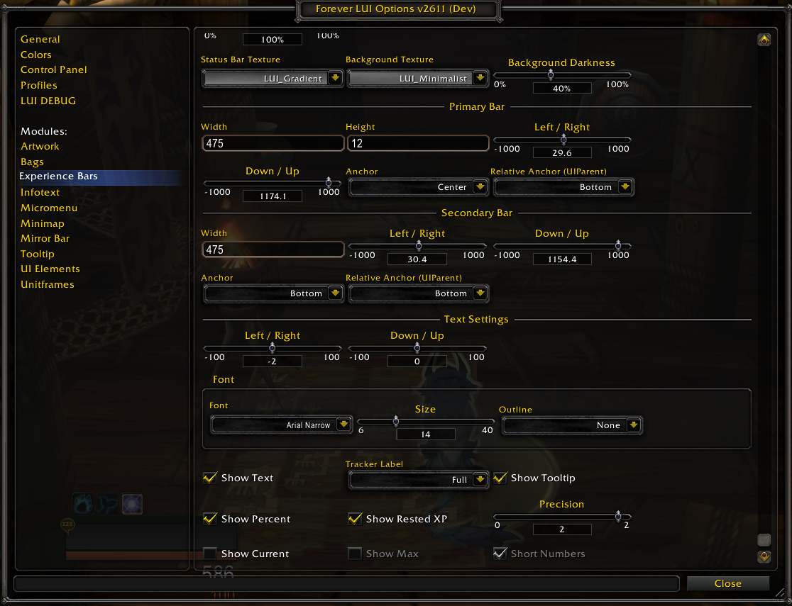
Infotext
Infotext → Individual Settings enables and positions displays such as time, gold, bag space, durability, Friends and Guild. Hover over a display for more information. Each page contains its own extra choices, such as gold totals or friend notes.
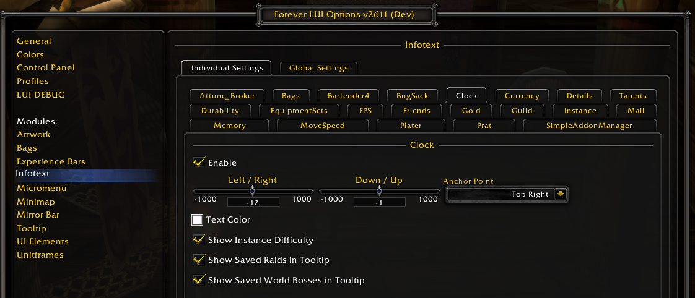
Global Settings contains shared fonts and hover-window colors. Top Bar Placement moves the top displays together. Friends and Guild also have separate hover-window appearance settings.
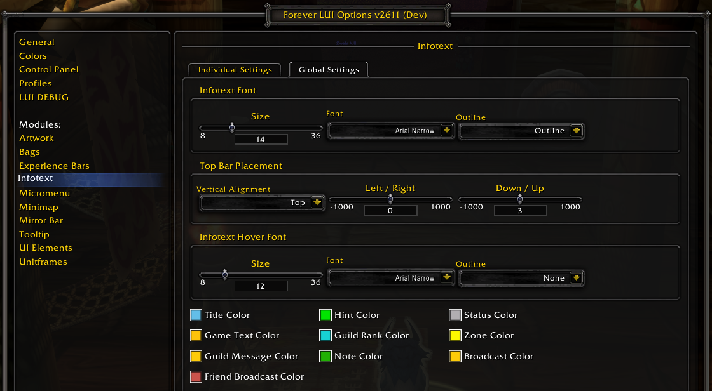
Supported LibDataBroker displays appear under Individual Settings too. Enable and position them here; their addon-specific settings remain in the supplying addon.
Retail's Show Mythic+ Score requires Raider.IO and matching character data. Gold's Characters in Tooltip filters the character list by faction; realm totals still include both.
Merchant
Merchant → Auto Repair / Auto Sell / Auto Stock each has its own enable switch. Choose repair funding, selling rules and exclusions, or items and quantities to restock.
Check the selected item qualities and exclusions before enabling Auto Sell.
Minimap
Minimap controls map size, placement, artwork, text and coordinates. Minimap Icons separately positions expansion, mail and notification icons.
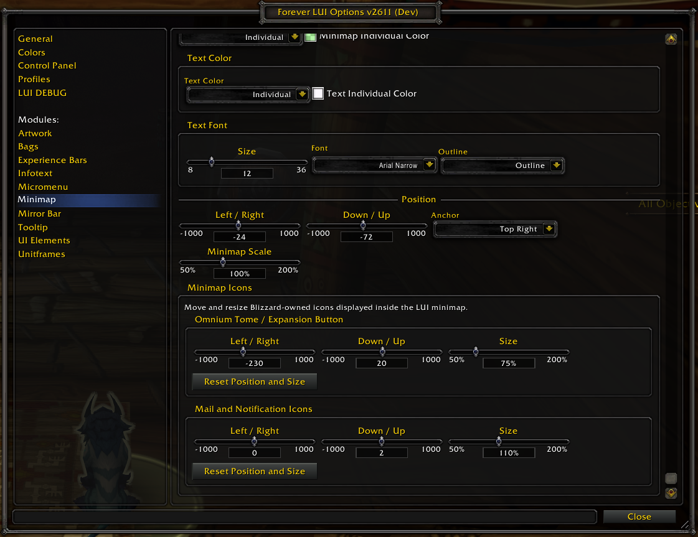
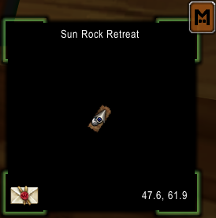
Mirror Bar
Mirror Bar → General Settings sets the size, position, texture and spacing of timers such as breath and fatigue. Border, Bar Colors, Name Text Settings and Time Text Settings adjust their appearance.
Tooltip
Tooltip contains visibility rules, scale, position, health bar/text, background and border settings. With Anchor to Cursor enabled, fixed-position controls may be greyed out. Background Texture → None allows a plain background color.
Buttons and UI Elements
Under UI Elements → Button Appearance, enable Customize Buttons and choose styles for ordinary buttons and the Escape menu separately.
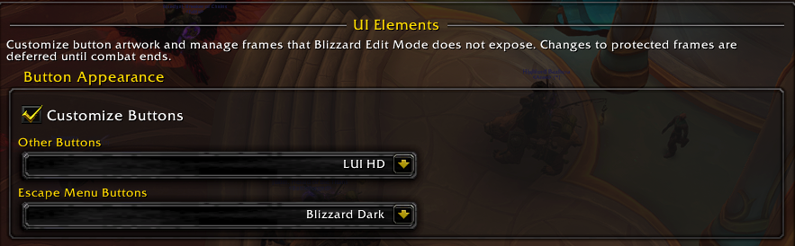
Managed frames and Edit Mode
LUI-Managed Frames positions supported elements such as the LFG Queue Eye. Select the frame, enable Manage This Frame's Position and use Toggle Position Preview.
Blizzard Edit Mode handles the Objectives Tracker, Alternate Power/Encounter Bar, Durability Frame and Vehicle Seat Indicator.
On supported clients, Swing Timer (Forever) toggles Blizzard's timer. Adjust its bars and placement in Blizzard Edit Mode. This Blizzard setting is independent of LUI profiles.
Unitframes
Select a frame under Unitframes. Its General page controls visibility, size, position and preview. Portraits, bars, texts and indicators have their own pages where supported.
Choose Compact or Categorized
Unitframes → General Settings → Options Layout changes how the settings menu is organized. Choose Compact for a flat list or Categorized for pages grouped under Bars, Texts, Auras and other topics. It changes the menu only.
General Settings contains shared fonts, aura fonts and decorative connectors. Font for All Unitframe Texts also changes aura fonts, while keeping their sizes and outlines.
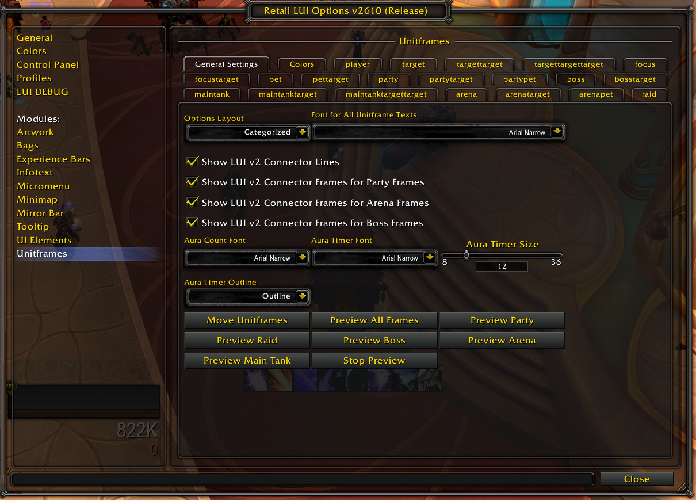
Group settings
A group's General page controls growth and spacing. Party also has visibility rules and Fade Out of Range; Raid uses automatic range fading.
When Grid2, Plexus, VuhDo, HealBot or Danders Frames is loaded, LUI skips creating its own raid frames. Configure those frames in their addon, or use a supported optional addon setup.
Position and anchors
Open Unitframes → [unit] → General. Anchor chooses the point on your unitframe. Anchor Frame chooses Screen or another available frame to follow; Attach To chooses a point on that frame. Left / Right and Down / Up adjust the offset.
Choose Screen for an independent screen position. With another anchor, the unitframe follows that frame when it moves. Some child frames use their parent instead, so the available controls vary by unit.
The available anchors also include CDM: Essential Cooldowns, CDM: Utility Cooldowns, CDM: Tracked Buffs and CDM: Tracked Bars when those frames are loaded. Enable Blizzard's Cooldown Manager and position its viewers in Edit Mode first. Select a CDM anchor to make the LUI unitframe follow it.
Fading outside combat
On the same General page, enable Fading → Fade Out of Combat and set Out-of-Combat Opacity. Fading is off by default. Mouseover or entering combat restores normal opacity; existing range fading still applies.
Optionally enable Show with Target to keep this unitframe at normal opacity while any target is selected, including outside combat. Clearing the target restores the reduced opacity unless you are in combat or hovering over the frame. This switch is off by default and is set separately for each unitframe.
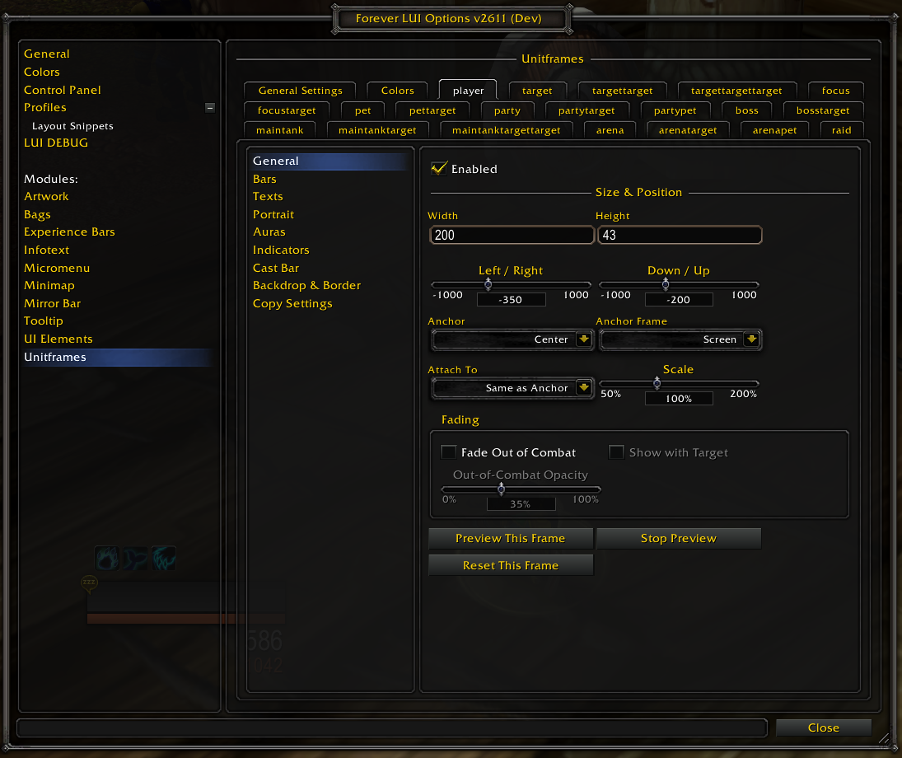
Raid frames and 25 / 40-player preview
LUI raid frames support up to forty players, including occupied subgroups 7 and 8. The live layout switches automatically with raid size: compact up to twenty-five members, wider for twenty-six to forty.
To check the layout without a raid, open Unitframes → raid → General, select Raid Preview Size → 25 Players / 40 Players, then click Preview This Frame. This selection changes the preview only. Use it outside combat and click Stop Preview when finished.
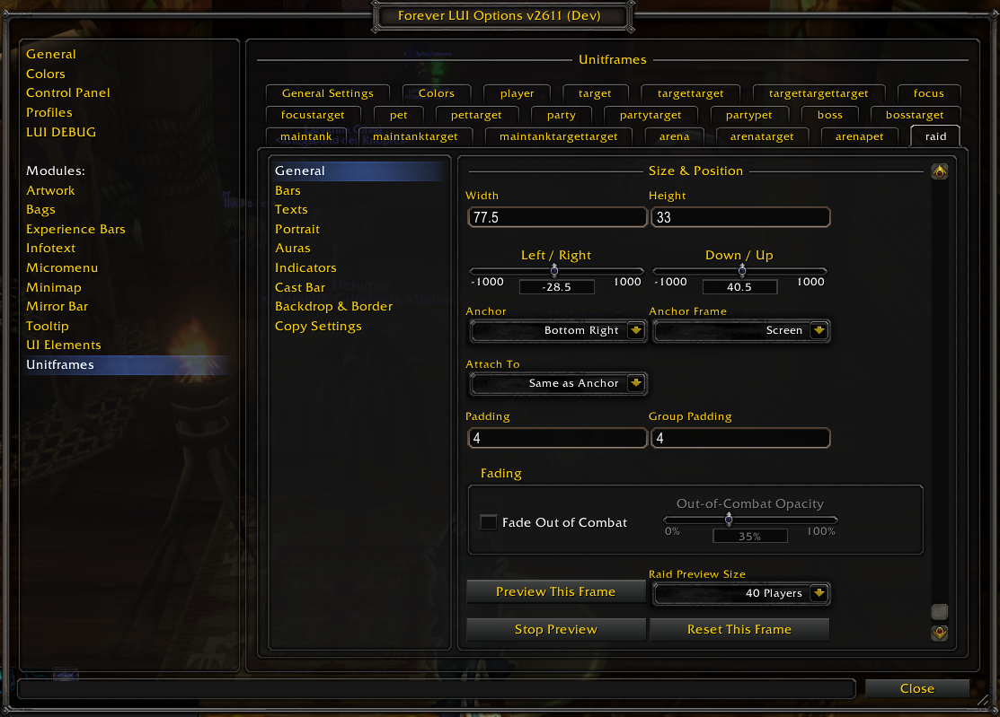
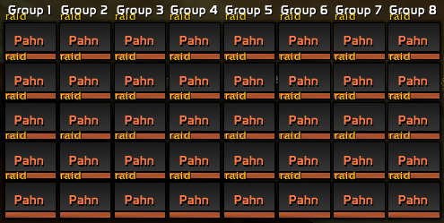
Appearance and copying
Backdrop & Border controls the outer frame; bar backgrounds are separate. Frame width and individual bar widths are also separate.
On the destination frame's Copy Settings page, select Copy From and a Section, then confirm the copy. Include Sizes and Include Positions are off by default.
Moving Frames and Using Preview
Under Unitframes → General Settings, use Move Unitframes to drag frames into place and save your changes. Preview controls show missing units; individual frames also offer Preview This Frame. Previews end on combat entry or profile changes.
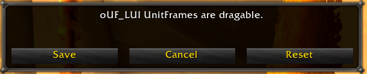
Reset returns movers to their last saved positions, not the default layout.
Bars, Texts and Indicators
Choose a frame, then open Bars, Texts or Indicators in Categorized mode. Available choices depend on the frame and client.
- Bars: health, power, incoming healing, absorbs and supported class or encounter resources. Adjust visibility, size, texture, position and color behavior.
- Texts: names, health, power, percentages, absorbs and combat feedback. Each has its own font, format, position and visibility options.
- Indicators: icons such as leader, role, raid marker, PvP, ready check and combat status. Set their visibility, size and position.
Example: Player Health Bar
In Categorized mode, open Unitframes → player → Bars → Health Bar. The example below shows the health bar's size, position, textures, background and color controls.
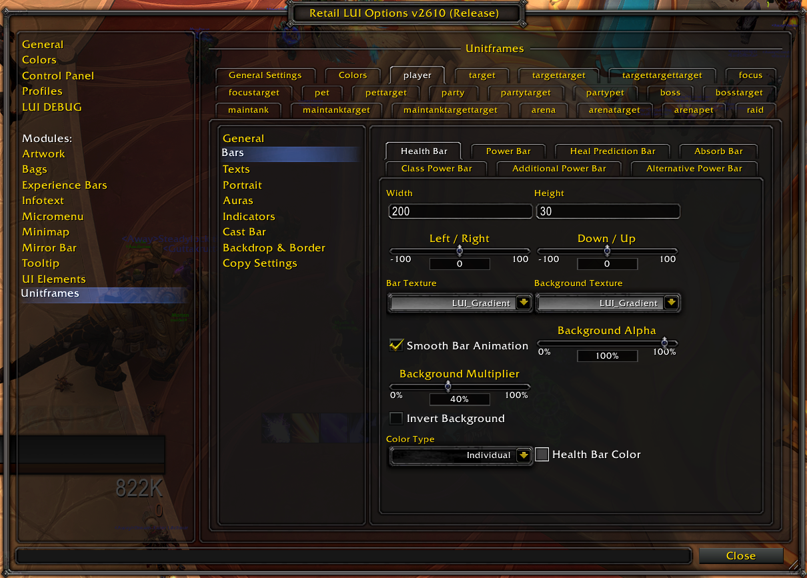
In Categorized mode, open the unit's Bars → Absorb Bar for shields, or Bars → Heal Prediction Bar for incoming healing. Enable the desired bar and adjust its texture and colors. Absorb text is configured separately under Texts. Incoming healing represents heals that have not landed yet; it is different from overheal already caused by a completed heal.
Player → Texts → Raid Group Text shows your subgroup. Raid → Texts → Group Labels labels occupied groups. Hunters in Forever also have Pet → Indicators → Pet Happiness.
Buffs and Debuffs
Open the frame's Auras → Buffs / Debuffs page in Categorized mode. Buffs and debuffs have separate size, spacing, position and filtering settings.
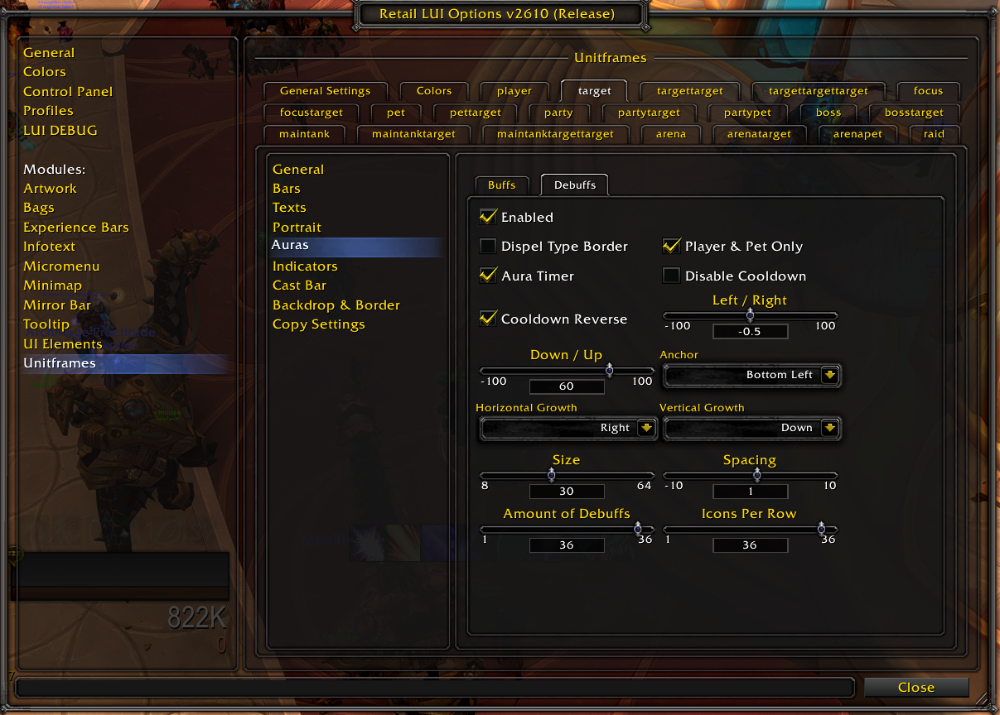
Filtered auras follow Blizzard's expiration-time sorting. A limit of four shows the first four in that order.
Cast Bars
Open a supported frame's Cast Bar page to set its appearance, size and position. Player and Target can attach to the screen; other cast bars use their available Attach To choices.
Show Latency Safe Zone marks latency on the player bar. Show Shielded Casts shows uninterruptible casts. Under Shielded Cast Bar → Shield Icons, choose left, right or both icons; bar and border colors can be overridden separately.
Click Preview Cast Bar on Player and Target to adjust them together, or use Preview All Cast Bars to show every supported test cast. Stop Cast Bar Preview ends the selected test; Stop All Cast Previews ends all test casts. A real cast replaces its own preview.
Useful Terms
Combat Restrictions
Leave combat and try again. Moving or previewing unitframes and importing profiles require out-of-combat use. Some protected layout changes wait until combat ends.
Follow reload prompts when shown. A manual reload is not needed after every change.
FAQ
Can I use LUI on Forever?
Yes. This guide covers Retail and Forever; some settings are client-specific.
How do I put action bars into the sidebars?
Use Control Panel → Addon Setup → Action Bar Setup for a starting Bartender4 or Dominos layout, or assign an existing bar in the sidebar settings.
Can I preview unitframes without a party or raid?
Yes. Use Moving & Preview. Raid → General also offers a 25 or 40-player preview.
How do I show two Details! meters?
Follow Using two Details! windows to connect both windows to their LUI artwork.
Why does a class-color change affect several elements?
They can use a shared palette. Colors explains how to give an element its own color.
How do I fade unitframes outside combat?
Enable Fade Out of Combat under the unit's General page. Mouseover and combat restore normal opacity. Enable Show with Target too if you want normal opacity while a target is selected. Range fading still applies.
Why is Chat missing from my options?
Prat or Chatter may be enabled, or LUI Chat may be switched off. See Chat and Control Panel.
What should I include in a bug report?
Share your LUI DEBUG report, the complete BugSack error if available, and a description of the steps leading up to the problem. Copy the reports before reloading.
Where can I read past changes?
Open General → Welcome → Changelog, or read the project changelog.
How do I add artwork behind another window?
Follow Custom panels to create a panel and attach it to an existing frame. Use the LUI Frame Identifier to find the frame name.
How do I share only my unitframes?
Use Profiles → Layout Snippets, select Unitframes on Share and generate a snippet. The receiver can choose which included sections to apply.
Why does Copy From change the profile I am using?
The active profile is the copy destination. Create and select a test profile first, then copy your normal layout into it.
Troubleshooting
- Type
/reloadand test again. If already recording a problem, copy the report first. - Test with LUI and LUIOptions only. Keep LUIDiagnostics and !BugGrabber enabled when collecting a report.
- If Blizzard's UI appears stuck, restart the game.
Include the LUI DEBUG report, the complete BugSack error if available, and a description of what happened, what you expected and how to reproduce it. Mention whether it also happens with other addons disabled, if tested.